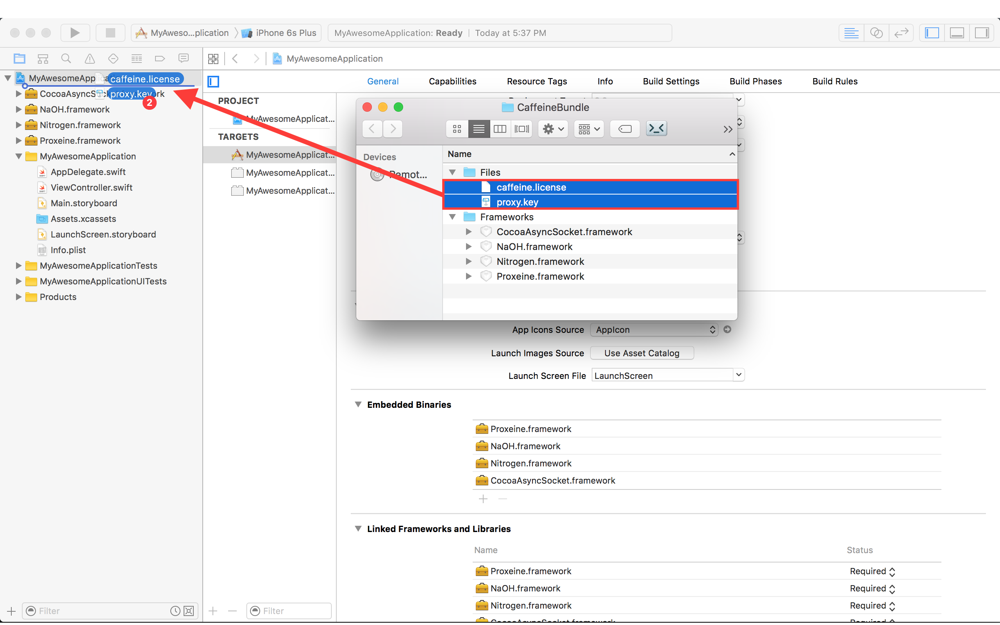

Reference
Reference
Contact our engineers at help@caffei.net for a trial.
Problems submitting to the app store? Click here
Want to A/B Test Caffeine? Click here
Integration/Getting Started
No backend changes. Takes about 15 minutes inside Xcode. You work with three APIs inside the CaffeineHTTPProxy class. The steps are described below.
Steps to Integrate
You should have received a Caffeine bundle containing six items: four frameworks and two files (picture below) which you will copy into your application bundle. If you have not, please contact us at help@caffei.net.

- The caffeine.license file is required to use Caffeine. It contains information that uniquely identifies your organization.
- CocoaAsyncSocket.framework is an open source library that Caffeine uses for fast-UDP diagnostic logging.
- NaOH.framework (pronounced
sodium hydroxide
) is an open source library built and maintained by us - forked from libsodium, implementing Caffeine’s security. - Nitrogen.framework contains our proprietary protocol.
- Proxeine.framework is the interpreter (proxy) that converts whatever networking library is used on the client into Caffeine.
- Proxy.key contains the public key the client will use to authenticate with our proxy server.
1. Drag and drop the four frameworks into the Embedded Binaries section in Xcode (found on the project’s general tab). In the subsequent prompt, make sure to check “Copy items if needed” before pressing “Finish”.

You should now see all four frameworks present within
a) Xcode’s Project Navigator
b) The Embedded Binaries section
c) The Linked Frameworks and Libraries section
(pictured below)
2. Drag and drop the proxy.key and caffeine.license into the Xcode project and add (and copy) to the main application target. Again, ensure that “Copy items if needed” is checked in the subsequent prompt.


You should now see the two files “caffeine.license” and “proxy.key” within Xcode’s Project Navigator (pictured below)

3. In the main target’s build settings, set “Embedded Content Contains Swift Code” to Yes
4. In your App Delegate, import the Proxeine framework.
Swift:
import Proxeine
Objective-C:
#import <Proxeine/Proxeine-Swift.h>
5. Locate the application:didFinishLaunchingWithOptions: function and call the start() function:
Swift:
CaffeineHTTPProxy.start()
Objective-C:
[CaffeineHTTPProxy start];
6. Caffeine defaults to off, so no traffic will be accelerated until specific URLs or sets of URLs are specified. This is done through CaffeineHTTPProxy’s allow and deny functions.
Swift:
CaffeineHTTPProxy.allow("http://google.com")
Objective-C:
[CaffeineHTTPProxy allow:@"http://google.com"];
To accelerate sets of URLs use the asterisk *
to denote prefixes or suffixes.
Swift:
CaffeineHTTPProxy.allow("http://google.com/*"") //everything starting with http://google.com/
CaffeineHTTPProxy.allow("*.jpg") //all urls ENDING in .jpg
CaffeineHTTPProxy.deny("https://google.com/") // prevents HTTPS acceleration to the single URL, `https://google.com/`
Objective-C:
[CaffeineHTTPProxy allow:@"http://google.com/*"];
See CaffeineHTTPProxy’s allow: and deny: for more examples of usage.

If you require any help, contact us at help@caffei.net
For more information about Caffeine, the HTTP falling back mechanism, and more, please click here